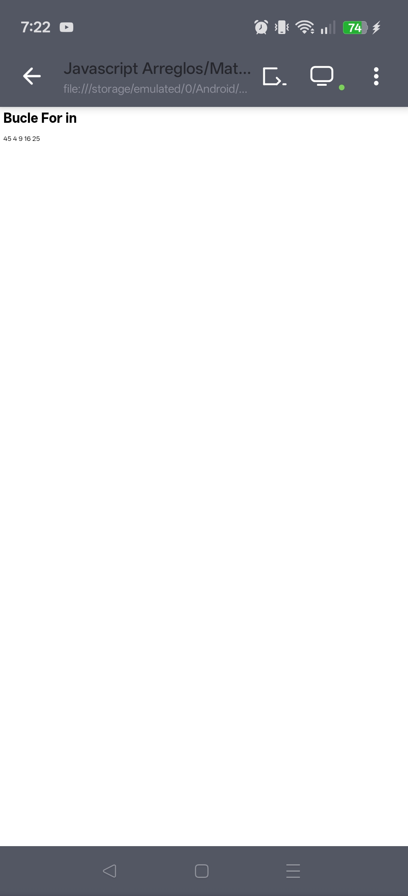

JavaScript: Fechas, bucles y arreglos
En esta práctica se analizan diferentes ejemplos básicos de JavaScript, como la obtención de la hora del sistema, el uso de bucles for...of y for...in, y el recorrido de arreglos y cadenas de texto.

1. Hora, minutos y segundos
Se utiliza el objeto Date para obtener la hora actual del sistema. Luego se formatean los valores agregando un cero si son menores a 10.
2. Bucle for...of con arreglos
Recorre un arreglo de coches y muestra cada elemento uno por uno en pantalla.
3. Bucle for...of con texto
Permite recorrer cada carácter de una cadena de texto como si fuera un arreglo.
4. Bucle for...in
Recorre los índices de un arreglo, permitiendo acceder a cada valor mediante su posición.
Estos ejercicios permiten comprender el uso básico de JavaScript para manipular datos, recorrer estructuras y mostrar información dinámica en una página web.